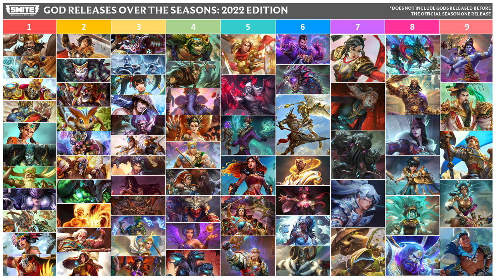
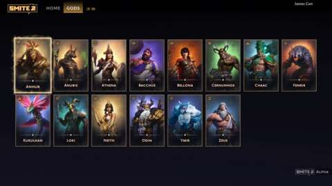

The main differences between the original and the new
The main changes include updated graphics, ui, and gameplay. As time has gone on smite 1 remains outdated. The newer gameplay style in smite 2 fixes many issues players would face each update
Changes to items and the map
Items have changed from the previous game. In smite 1 you could only buy items for your damage type. In smite 2 everything is free game.
The changes made for gods and future gods
here we will discuse the changes to gods and their abilites in smite 2
- Achiles
- Agni
- Ah Muzen Cab
- Ah Puch
- Amaterasu
- Anhur
- Anubis
- Ao Kuang
- Aphrodite
- Apollo
- Arachne
- Ares
- Atremis
- Artio
- Athena
- Atlas
- Awilx
- Baba Yaga
- Baccus
- Bakasura
- Bake Kujira
- Baron Samedi
- Bastet
- Bellona
- Cabraken
- Camazotz
- Cerberus
- Cernunnos
- Chaac
- Chang'e
- Charon
- Charybdis
- Chernobog
- Chiron
- Chronos
- Cliodhna
- Cthulhu
More info about smite 1 here.
- Agni
- Aladdin
- Cabrakan
- Geb
- Hua Mulan
- Ullr
- Amaterasu
- Anhur
- Anubis
- Aphrodite
- Ares
- Athena
- Baccus
- Baron Semedi
More info about smite 2 here.